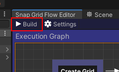
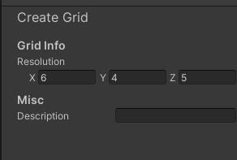
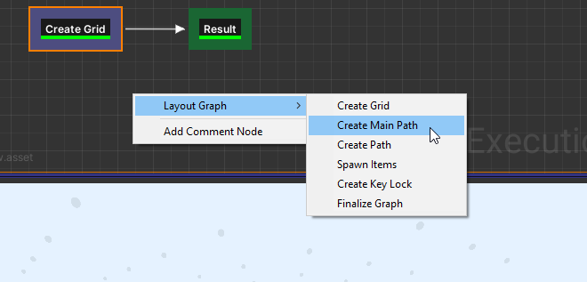
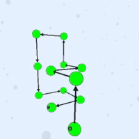
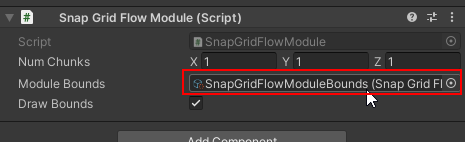
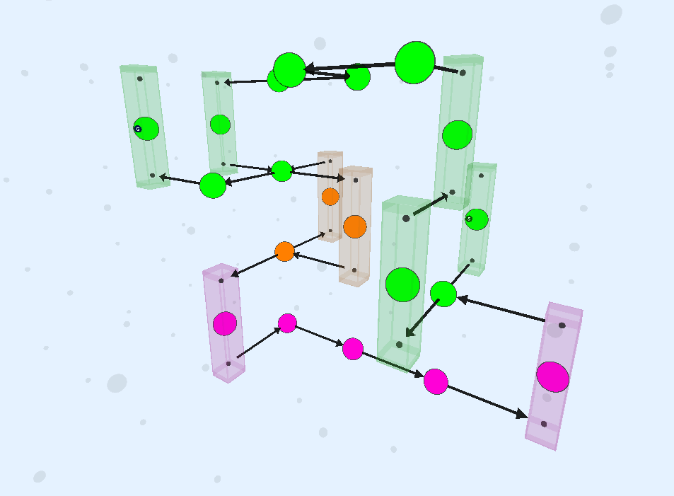
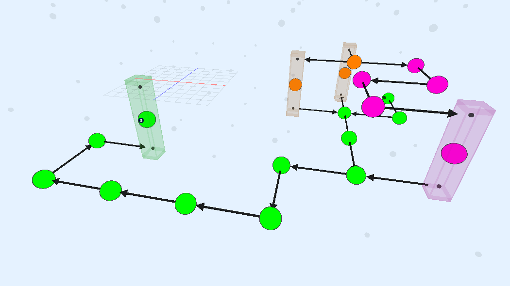

Design the layout of your procedural dungeons using the flow editor. Then create an infinite number of procedural dungeons that follow this layout rule.
Create cyclic-paths, key-locks, teleporters, shops, treasure rooms, boss rooms and much more
Create a Snap Grid Flow Asset
Move to an appropriate folder and create a new Snap Grid Flow Graph asset from the Create Menu
Double click the asset to open up the flow graph editor
The top panel is the Exection Flow Graph where you would be designing your dungeon flow. The resulting layout graph is shown in the 3D viewport below
3D Viewport Navigation
The navigation is similar to what you'd expect from Unity's scene view
Hold right mouse button and move to look around.
Hold right mouse button and WASD to move
Hold right mouse button and Q to move up, E to move down
Create Grid
Right click on the execution graph and add a Create Grid node from the context menu
Layout Graph > Create Grid
Link the Create Grid node to the Result node
Hit the Build button in the Execution Graph Panel

Move around in the 3D viewport and should should see a faint set of dots that represent the initial grid that this node has created. This is our work area and our dungeon layout will grow in it
Select the Create Grid node and inspect the properties

You may adjust the size of your initial work area here.
There are a few things to consider when choosing the size of your grid
Larger initial grids will require more processing power.
Sometimes, it's better to have a smaller grid so it creates a nice tightly packed layout.
However if the grid is too small, the paths will not have any room to grow
You should come back to this node and adjust it as needed. For now, we'll leave it to default
Create Main Path
Add a Create Main Path node
Layout Graph > Create Main Path

Break the previous connection we made to the result node and link it like this
Hit build
Keep hitting build for different results
More Viewport Controls
Hold Alt + Hold Left Mouse button + Move mouse to orbit around the selected nodes
Press F key to focus on the active nodes and reset the orbit pivot

Main Path Properties
Select the Create Main Path node and inspect the properties
Parameter
Description
Path Size
Control the size of the path with the variable
Path Name
Each path in the flow system can be later referenced using its path name. The name of this path is set to main
Snap Module Categories
When you registered a room in the module database, you specified a category (which defaulted to Room). This allows you to control the module prefabs that would be used from that list to stitch the path
Node Color
Adjust the preview color of the nodes created in this path
Start/End Marker Names
These values allow you to insert your prefabs into the start / end rooms using the theme engine. More on this later
Start/End Node Path Name
Override the path name of the first and the last node in the path. This allows you to give a unique path name to your spawn room and goal room
Position Constraints
Control the position of the nodes in the path with your own scripts and rules. More on this in the later sections
Snap Module Constraints
Override the snap modules for any of the nodes in the path with your own scripts and rules. More on this in the later sections
We'll leave all the properties unchanged for now
Create Alternate Path
Add a node Create Path and connect it as below
Select the node and inspect the properties
Build the graph, and you'll see a new branch (orange) emitting out of the main branch (green)
This new orange path branched out of the main (green) path because we have configured it to do so by setting the Start from Path parameter to main
We would like to have this new path merge back into the main path. Set the End on Path parameter to main. We also want to reference this new path as alt
Control the size of the path with the Min/Max Path Size parameter
Add a description to this node
Create Another Path
We'll create another path originating from the 'alt' path and merging back into the 'main' path
The path originates out of the alt path (orange) and merges beack into the main path (green)
Assign Module Database
The flow editor doesn't have a module database assigned, so it doesn't really know how our modules look like
Let's assign the module database in the editor settings, so it creates a layout graph compatible with how we've set up the modules
Click an empty area in the Execution Flow Graph to view the editor properties
Property
Description
Randomize Seed
Randomize the layout everytime you build
Seed
The current seed that was used to build the dungeon
Module Database
Specify a module database asset to build the flow graph compatible with the regsitered module prefabs
Auto Focus Viewport
Whenever you select a node in the execution graph, the camera auto-focuses on all the active nodes. Uncheck to disable this
Assign the module database we created earlier
Rebuild and have a look at the layout graph now
You'll notice that the flow graph is built on a single floor, which is consistent with the way we've designed our registered modules. We have designed a room which, although it goes out in the four horizontal directions, there's no way of moving up or down.
Create a Lift Module
Let's create a module that lets us move to another floor
Design Lift Module
Create a new module as we've done in the previous Modules section
Switch to a new scene and create a new game object and name it Module_Lift
Reset the transform
Add a Snap Grid Flow Module component and assign the module bounds asset

You should see the bounds of the module
We want the module to span two node vertically
Set the Num Chunks parameter to (1, 2, 1)
Go ahead and design your lift module in any way you like. Leave two openings on the same side of the room, one below and another on top
Drop in two snap connection prefabs and make sure they are facing outwards. Align them correctly using the Grid and Snap window
Make sure all the objects that make up this room are inside the module game object
Save this module lift as a prefab
Delete the Module_Lift game object from the scene as we no longer need it
Register Lift Module
Register this module in the Module database. Select the module database asset and in the properties, register our new lift module
Since we've modified the module database, hit Compile Module Database and save the asset
Open up our flow graph editor and reassign the Module database in the Editor Settings, as we've done previously
Click build and now, the flow graph uses the new lift module to move to other floors

Notice how the links enter and exit out of the same side, since this is how we've set it up in our module design
Adjust Selection Probability
We don't want the lift to show up too often. Open up the Module database and set the selection weight to 0.1 on the lift module entry
Before (with selection weight 1.0):
After (with selection weight 0.1):

Create a Goal Room
We'll create a large 2x2x2 room for the boss fight and register it under the category Boss.
Design the Goal Room Prefab
Open a new empty scene, create an empty game object and name it Room_BossFight
Reset the transform
Add a Snap Grid Flow Module component and set the num chunks to (2, 2, 2)
Assign the module bounds
You should now see a the bounds visuals in the scene view. You have a large area to design your boss fight arena
Design the module in any way you like.
In our example, we'll keep only one opening on the top floor, and the player falls down to the arena to fight the boss
Add the snap module near the opening and snap it to the correct position
Make sure all your objects are inside the module prefab
Turn this into a prefab
Delete the module game object from the scene
Register the Module
Register this module in the Module Database with the category Boss
Make sure the following parameters are set
Parameter
Value
Module Prefab
Room_BossFight
Category
Boss
Selection Weight
1
Since we've modified the module database, hit Compile Module Database and save the asset
Open up our flow graph editor and reassign the Module database in the Editor Settings, as we've done previously
Select the Create Main Path node and inspect the properties in the Details panel
Change the Category Constraint Mode to Start End Node
This allows you to override the category of the start and the end nodes.
This will force the flow system to pick up modules that are registered under the Boss category. We previously registered our boss room with this category
Build the flow graph and have a look at the layout graph
The last node in the main path has a size of 2x2x2 to accommodate our goal module. It also enters from the correct position
Create More Room Modules
Add a few more Room modules of size 2x1x1 and 2x1x2
Register them with the module database under the category Room and click Compile Module Database. Adjust their weights to control how often they appear